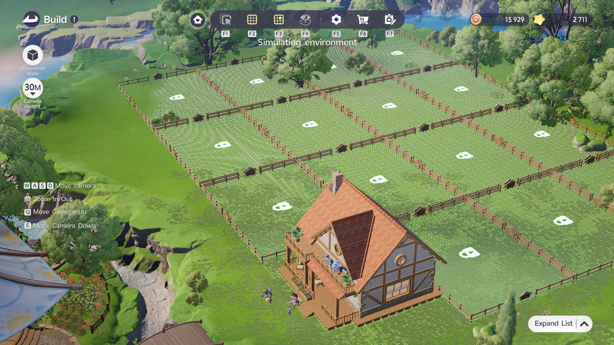

ZONE MAP / CONCEPTNOT TILE-EXACT
FARMLAND16 plots01
WOODLAND8 plots02
PRODUCTIONCompact line03
MINES4 plots04
UTILITIESCentral access05
A focused layout companion for Aniimo Homeland production. Choose your RV, switch decoration density, and keep every zone readable.
This level remains selectable by design, but layout counts are not guessed. Add a verified record to the JSON schema to activate it.
Keep farmland and woodland in clean blocks so planting, watering, and collection routes stay legible.
Place storage and confirmed utilities near the production line. Exact facility counts remain unlisted until verified.
The no-decoration variant reserves the full concept map for functional placement and access lanes.

This screenshot anchors the app’s visual language: the elevated build view, pale placement grid, green terrain, and fenced production blocks.
{
"rvLevel": 8,
"verification": "verified",
"zones": {
"farmland": 16,
"woodland": 8,
"mines": 4,
"production": null,
"utilities": null
}
}Unknown means null. The interface never turns missing data into fake mechanics.